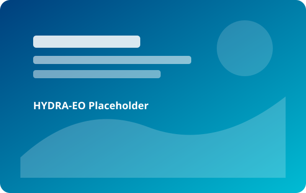
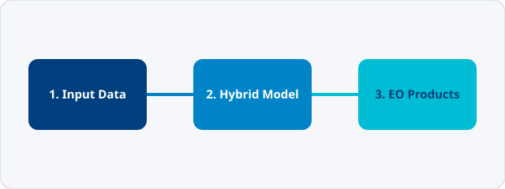

Arquitectura Estática
Carga instantánea sin servidor ni base de datos, alojada gratuitamente en GitHub Pages.
Plantilla estática de prueba inspirada en la arquitectura de hydra-eo.eu: landing page en HTML/CSS/JS combinada con documentación técnica compilada con Quarto.

Texto placeholder para describir el propósito del proyecto, objetivos científicos y alcance general.
Carga instantánea sin servidor ni base de datos, alojada gratuitamente en GitHub Pages.
Subpáginas técnicas escritas en Markdown (.qmd) con soporte nativo para diagramas y código.
Configurado para funcionar bajo https://kundun14.github.io/github_page_hydra/ sin rutas rotas.
Resumen de los pilares técnicos y científicos que articulan la plataforma.
Placeholder para describir la combinación de datos satelitales, UAV y mediciones de campo.
Ver cronograma en Quarto →Placeholder para explicar la combinación de modelos físicos y aprendizaje automático.
Ver flujo metodológico →Estructura modular de ejemplo para presentar fases o grupos de tareas.
Campañas de muestreo y estandarización de datos de entrada.
Entrenamiento, calibración y validación cruzada de algoritmos.
Evaluación operativa y publicación de productos abiertos.
Diagrama placeholder que ilustra las etapas principales de procesamiento.

Entradas de ejemplo enlazadas al índice de noticias generado con Quarto.
Ejemplo de nota breve con enlace a la documentación completa.
Leer más en Quarto →Placeholder para publicar resultados preliminares, eventos o congresos.
Ir al archivo de noticias →Espacio reservado para instituciones socias y equipos participantes.
Coordinación general y teledetección.
Validación en campo y campañas aéreas.
Infraestructura de datos y herramientas open-source.
Ver detalle →Enlaces de ejemplo hacia paquetes, documentación y código abierto.
Repositorio de ejemplo con scripts y guías de uso reproducibles.
Explorar herramientas →Código fuente del sitio web y workflow de despliegue automático.
Perfil kundun14 →Ejemplo de panel desplegable controlado con JavaScript vanilla.
Guía rápida placeholder para ejecutar el entorno de trabajo.
Cómo añadir nuevas páginas `.qmd` dentro de `docs-quarto/`.
Sin servidor backend, el contacto directo se gestiona mediante enlace mailto o página informativa.
Puedes reemplazar este correo por el de tu equipo o abrir la página de contacto en Quarto.
Este prototipo está preparado para publicarse en https://kundun14.github.io/github_page_hydra/ mediante GitHub Actions y Quarto.